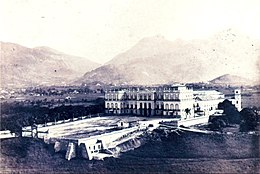
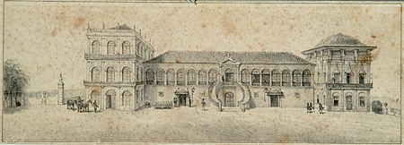
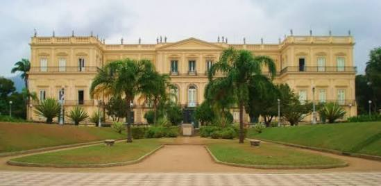
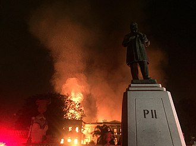

Antecedentes

A instituição remonta ao Museu Real, fundado por Dom João VI (1816-1826) em 1818, numa iniciativa para estimular o conhecimento científico no Brasil. Inicialmente o museu abrigou coleções de materiais botânicos, de animais empalhados, de minerais, de
numismática, de obras de arte e de máquinas. Herdou algumas das aves empalhadas da antiga Casa dos Pássaros, primeiro museu de história natural brasileiro, fundado pelo vice-rei Dom Luis de Vasconcelos. A primeira sede do Museu
Real localizava-se no Campo de Santana, no centro da cidade, em um prédio mais tarde ocupado pelo Arquivo Nacional.
Com o casamento do príncipe Dom Pedro I com a princesa Maria Leopoldina de Áustria, vieram para o Brasil importantes naturalistas europeus, como Johann Baptiste von Spix e Carl Friedrich Philipp von Martius, que trabalharam para o museu.[13] Outros pesquisadores
europeus, como Auguste de Saint-Hilaire e Georg Heinrich von Langsdorff, contribuíram, ao longo do século XIX, para a coleção de exemplares naturais e etnológicos da instituição, nas respectivas expedições pelo país.
Particularmente, após a declaração da Independência em 1822 e a nomeação como ministro do Tribunal de José Bonifácio de Andrada e Silva, um reformador iluminado e ele próprio um mineralogista treinados, gestores públicos e museu insistentemente reivindicado
para a instituição local uma parte justa dos itens coletados - e, portanto, soltar uma briga eterna entre viajantes estrangeiros e museólogos brasileiros que atingiria o seu pico quando o Império se desfez. Posição do museu
neste debate implícito na territorialidade, entretanto, foi enfraquecido pelo fato de que bem na segunda metade do século, a fim de adquirir coleções, que tinha pouca escolha que não para comprá-las de estrangeiros especialistas,
como a coleção de minerais Werner, comprada do geólogo alemão Pabst von Ohain em 1818 em 12 mil réis.
Segundo Reinado

Em 1844, apenas quatro anos após a Declaração da Maioridade que trouxe Dom Pedro II ao poder, o diretor do museu à época, Frei Custódio Alves Serrão, redigiu um relatório apontando problemas no museu devido a falta de recursos para sua manutenção. O relatório
foi publicado pouco tempo após um corte orçamentário aprovado pelo Senado do Império, e apontava condições precárias na infraestrutura do edifício que abrigava o museu, na época localizado em sua primeira sede, no Campo de
Santana.
No decorrer do século XIX, refletindo tanto as preferências do Imperador Pedro II quanto o interesse do público europeu, o Museu Nacional passou a investir nas áreas da antropologia, paleontologia e arqueologia. O próprio Imperador, um entusiasta de todos
os ramos da ciência, contribuiu com diversas peças de arte egípcia, fósseis e exemplares botânicos, entre outros itens, obtidos por ele em suas viagens. Desta forma o Museu Nacional se modernizou e tornou-se o centro mais importante
da América do Sul em História Natural e Ciências Humanas.
Em 1876, o museu foi reacomodado no Paço de São Cristóvão, na Quinta da Boa Vista, sob a direção de Ladislau Netto. A partir de então, o museu entra na sua fase de auge, quando recebe o meteorito do Bendegó, melhora sua estrutura física, aumenta os salários
dos funcionários e participa de diversas exposições internacionais. À medida que o acervo foi se expandindo, o problema da falta de espaço para armazenamento foi se agravando, e já começara a ser percebido na gestão de João
Batista de Lacerda (1895-1915).
República

O Imperador ainda era uma figura muito popular no momento em que foi deposto, em 1889. Desta forma, os republicanos procuraram apagar os símbolos do Império. Um destes símbolos, o Paço de São Cristóvão, a residência oficial dos imperadores, tornou-se
um local ocioso e que ainda representava o poder imperial. Então, em 1892, o Museu Nacional, com todo o seu acervo e seus pesquisadores, foi transferido da Casa dos Pássaros para o Paço de São Cristóvão, na Quinta da Boa Vista,
onde se encontra até os dias de hoje.
Em 1946, o Museu passou a ser administrado pela então Universidade do Brasil, atual UFRJ. Os pesquisadores e laboratórios ocupam boa parte do museu e alguns prédios erguidos no Horto Botânico, na Quinta da Boa Vista. No Horto ainda encontra-se uma das
maiores bibliotecas científicas do Rio de Janeiro.
Problemas financeiros e incêndio

Com seguidos cortes no orçamento, desde 2014 que o museu não vinha recebendo a verba de 520 mil reais anuais necessários à sua manutenção. Em 2018, quando o museu completou duzentos anos, o valor recebido despencou para 54 mil reais.
A edificação apresentava sinais visíveis de má conservação, como paredes descascadas e fios elétricos expostos. Várias salas estavam fechadas por total impossibilidade de uso.[17] O espaço que abrigava uma das maiores atrações - a montagem da primeira
réplica de um dinossauro de grande porte feita no Brasil - fechou por estar infestada de cupins. Segundo o vice-diretor do Museu, Luiz Fernando Dias Duarte, o museu lutava, desde 2000, para construir prédios anexos destinados
a abrigar pesquisas que requeriam a preservação de objetos em álcool e formol, materiais inflamáveis. Somente um anexo foi erguido, com verba da Petrobras.
Em 2 de setembro de 2018, logo após o encerramento do horário de visitação, um incêndio de grandes proporções atingiu todos os três andares do prédio do Museu Nacional, na Quinta da Boa Vista.[5] Os bombeiros foram acionados às 19h30,[18] chegando rapidamente
ao local. Às 21 horas o fogo encontrava-se fora de controle, com grandes labaredas e estrondos ocasionais,[6] sendo combatido por bombeiros de vinte quartéis.[19] Dezenas de pessoas dirigiram-se à Quinta da Boa Vista para ver
o incêndio.
Até às 21h30 de 2 de setembro coleções inteiras haviam sido destruídas pelo fogo, assim como duas exposições que estavam em duas áreas da frente do prédio principal. Os quatro seguranças que se encontravam trabalhando no local conseguiram escapar, não
havendo registro de vítimas. O governo de Portugal afirmou em nota oficial "profunda tristeza pela perda de um acervo histórico e científico insubstituível" e afirmou estar "inteiramente disponível para, no que for útil e possível,
colaborar na procura da reconstituição deste importante patrimônio identitário, não apenas do Brasil, mas de toda a América Latina e do mundo".